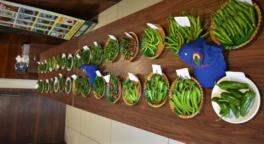
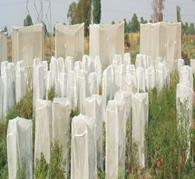
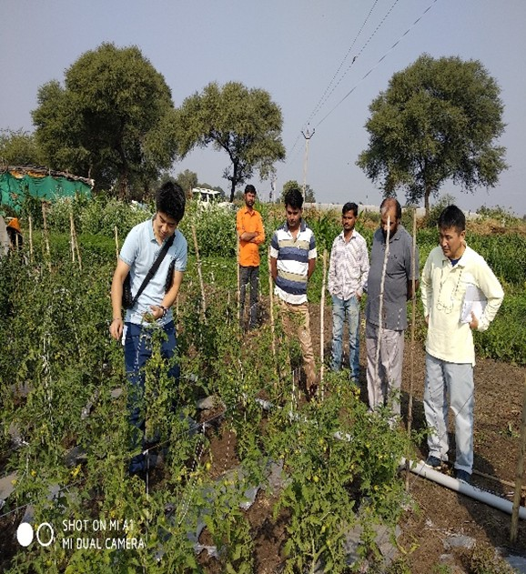

Acres R&D Farm
Established Since
Trial Centres
Research Network
A Research and Development farm is essential to test and identify new seed varieties. Varad Seeds & Agritech has its own R&D center farm located at Tapowan, Tq. Bhokhardan, Dist. Jalna, Maharashtra, spread across 15 acres.
Another research trial centre is operational in Maharashtra, Telangana, and pan India. This R&D farm supports the development, testing, and production of new hybrid seeds. This R&D station was established in June 2008.
We are primarily focused on higher yield, disease resistance, and nutrient-based breeding programs in vegetable seeds. Focused on seeds quality assessment with advanced techniques.
Varad Seeds has highly educated and experienced staff in their R&D who develop modern technologies and bring external expertise to our company. This will take the company a step forward and strengthen the company's motto 'Every Seed Matters' through experimental testing under R&D.
Tapowan, Tq. Bhokhardan, Dist. Jalna, Maharashtra
Spread across 15 Acres — Established June 2008
Maharashtra, Telangana & Pan India research network for extensive testing



Innovation driven by science for sustainable agriculture
Breeding programs focused on maximizing crop yield through advanced genetics and field testing.
Developing seeds that are resistant to diseases for healthier crops and reduced losses.
Focused on improving nutritional content and seed quality through scientific breeding methods.
Producing seeds that can grow in harsh environmental conditions for climate resilience.
Observing environmentally friendly practices and reducing environmental impacts in all processes.
In pursuit of possibilities in genetics with the most innovative research program in Indian agriculture.